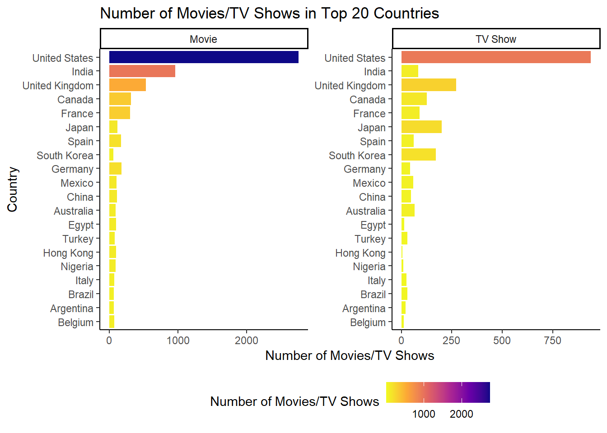
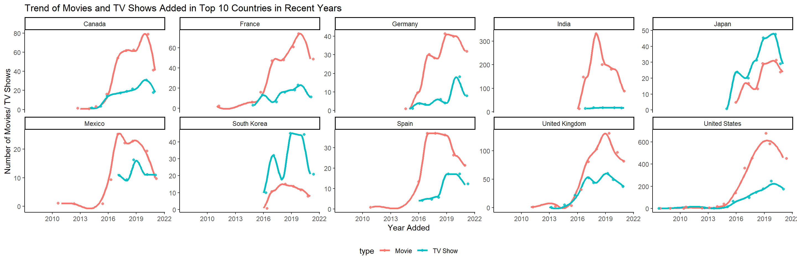
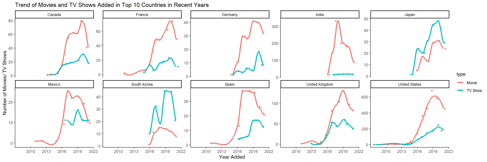

EDA
Mingming Pan
5/3/2022
#Understanding what content is available in different countries. Are there any differences between movies and TV shows? #Does Netflix have more focus on TV Shows than movies in recent years in different countries and regions?
#n_movie and n_show #Why arrange is not working? 
#Subset the dataset by movie and TV show
netflix_movie <- netflix_clean %>%
filter(type == "Movie")
netflix_show <- netflix_clean %>%
filter(type == "TV Show")#Top 5 ratings in top 10 countries #Movies
#Top 10 countries
top_10_movie <- netflix_movie %>%
unnest(country) %>% #unnest listed country
filter(!is.na(country)) %>%
pull(country) %>%
fct_count() %>%
arrange(desc(n)) %>%
slice(1:10) %>%
pull(f)
netflix_movie %>%
select(show_id, country, rating) %>%
unnest(country) %>%
filter(country %in% top_10_movie) %>%
group_by(country, rating) %>%
summarise(
n_movie = n()
) %>%
arrange(desc(n_movie)) %>%
group_by(country) %>%
slice(1:5) %>%
ungroup() %>%
mutate(
rating = str_to_title(rating) %>%
as_factor() %>%
fct_reorder2(country, n_movie, .desc = FALSE)
) %>%
ggplot(aes(x = n_movie, y = rating, fill = n_movie)) +
geom_bar(stat = "identity", width = 1, colour = "black") +
labs(
y = "Rating of Movies",
x = "Number of Movies",
title = "Top 5 Movie Ratings in the Top 10 Countries"
) +
theme(legend.position = "right",
axis.text.y = element_text(color = "black",
size = 10,
hjust = 1)) +
scale_fill_viridis_c("# Movies", direction = -1) +
facet_wrap(~ country, scales = "free", ncol = 2)## `summarise()` has grouped output by 'country'. You can override using the
## `.groups` argument. #listed in and country both are stored in list how to unnest both?
#listed in and country both are stored in list how to unnest both?
#Top 10 countries
top_10_show <- netflix_show %>%
unnest(country) %>% #unnest listed country
filter(!is.na(country)) %>%
pull(country) %>%
fct_count() %>%
arrange(desc(n)) %>%
slice(1:10) %>%
pull(f)
netflix_movie %>%
select(show_id, country, rating) %>%
unnest(country) %>%
filter(country %in% top_10_show) %>%
group_by(country, rating) %>%
summarise(
n_movie = n()
) %>%
arrange(desc(n_movie)) %>%
group_by(country) %>%
slice(1:5) %>%
ungroup() %>%
mutate(
country = str_to_title(country) %>%
as_factor() %>%
fct_reorder(n_movie, .desc = TRUE)
) %>%
ggplot(aes(x = n_movie, y = rating, fill = n_movie)) +
geom_bar(stat = "identity", width = 1, colour = "black") +
labs(
y = "Rating of TV Shows",
x = "Number of TV Shows",
title = "Top 5 TV Shows Ratings in the Top 10 Countries"
) +
theme(legend.position = "right",
axis.text.y = element_text(color = "black",
size = 10,
hjust = 1)) +
scale_fill_viridis_c("# TV Shows", direction = -1) +
facet_wrap(~ country, scales = "free", ncol = 2)## `summarise()` has grouped output by 'country'. You can override using the
## `.groups` argument. #Taiwan, South Korean and Australia <-> Mexico, China, Germany
#More focus on movies or TV shows in different countries? #Why
## `summarise()` has grouped output by 'country', 'year_added'. You can override
## using the `.groups` argument.
## `geom_smooth()` using method = 'loess' #Conclusion: From the plots, we can conclude that.